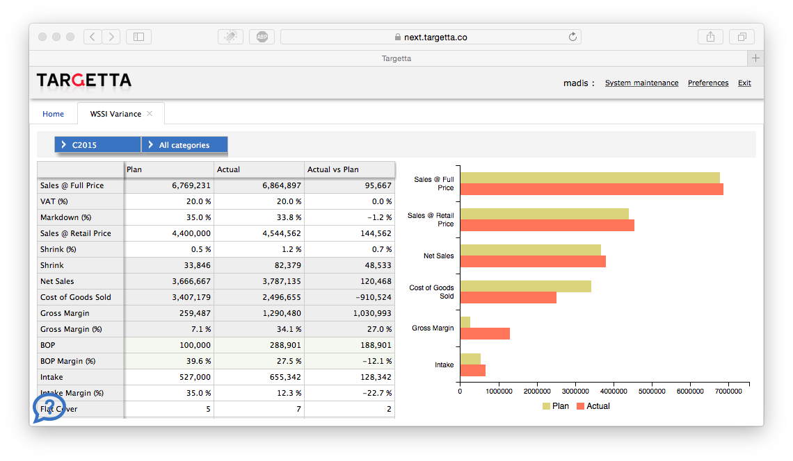
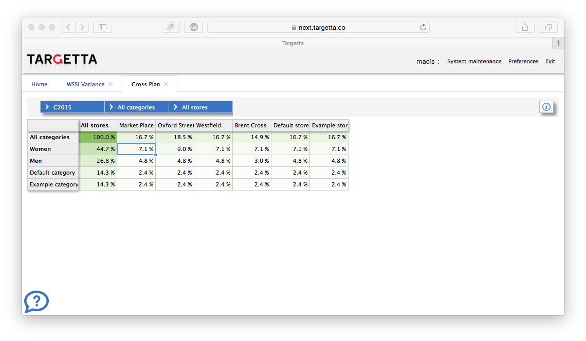

Merchandise Planning
is a new clever way to budget your retail business.
MSSI
MSSI stands for Monthly Sales, Stock and Intake. This methodology is widely used to optimize merchanise supply in retail business.
WSSI is short for Weekly Sales, Stock and Intake and it provides vast improvement over MSSI as it handles period sales and supply on a weekly basis.
Our WSSI enables bot top-down and bottom up category management in retail organization. It allows on-the-fly variance analysis and gross margin modelling with real-time analytics. This tool helps buyers and category managers to optimize inventory purchases an commitments.
Cross Plan helps retail managers to model channel and category sales and profitability in great detail just by adjusting simple top-level figures.
Seasonal Calendar
In most cases the retail business does not follow our normal calendar as the demand for certain goods is seasonal. This is why every business can set up their sales calendar exactly the way they expect the business to behave.
Integrations
No plan or budget can help if it is not based on actual information. Targetta enables users to link their existing sales data from variety of sources including online platforms such as Vend, Erply or Magento.